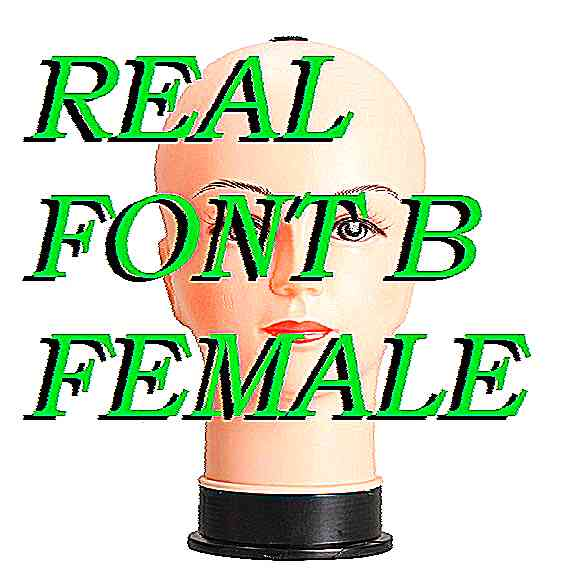

WELCOME
TO THE
w h o l e s a l e
2014 XDogólnie to zmaltretowane zdjęcia manekinów miały być komentarzem do nieosiągalnych standardów piękna w społeczeństwie jednocześnie jest to krytyka kapitalistycznej rzezi jednostki, połączona ze zwróceniem uwagi na marnotrastwo surowców manekiny rodzą się by być najpiękniejsze być gwiazdami witryn, nosić na sobie ostatnie krzyki mody ale zbyt szybko stają się zbędne, do tego jeszcze wyglądają czesto dziwnie i niepokojąco. tytułem tej kompilacji mogłaby również być
dolina niesamowitości
będą znalezione na śmietniku gdzieś za galerią handlową. polski zjeb niby pseudoartysta weźmie je wtedy do domu
żeby ozdobiły jego mieszkanie
 co nie jest w sumie takim złym końcem.